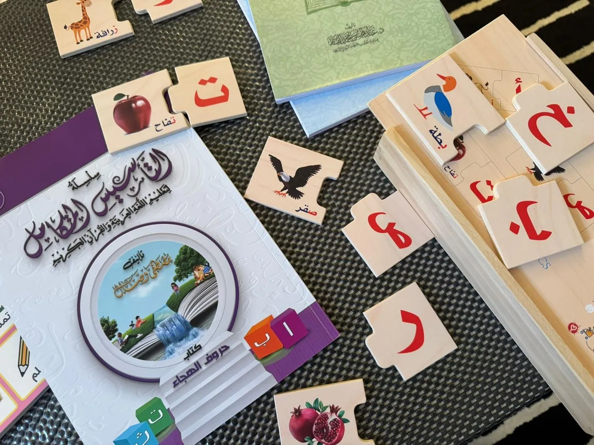
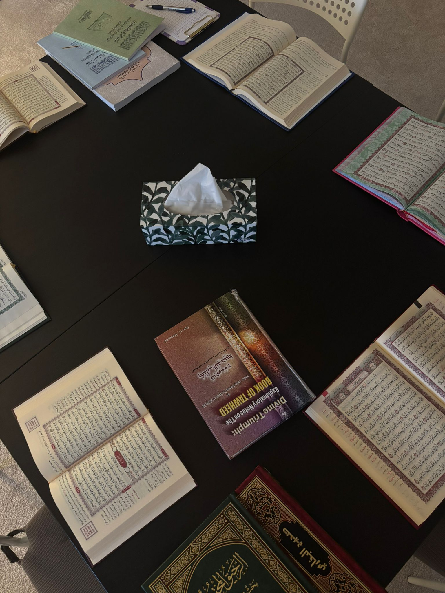
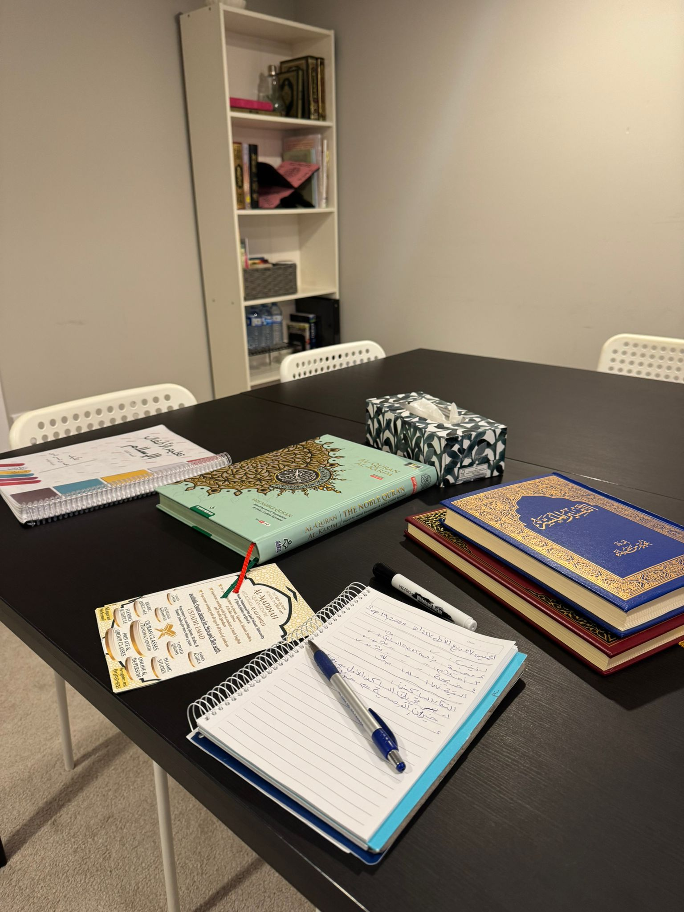

Programs
A clear starting point. A structured path forward.
Four distinct programs connect careful recitation, Arabic understanding, Islamic foundations, and learning with adab.
Program 01
Qur’an
Qur’an Recitation & Memorization
Careful correction from first sounds toward accurate, confident recitation.
Students work on correct pronunciation, Makharij, fluency, and Tajweed through teacher-guided reading, repetition, review, and patient feedback. Memorization and Hifz may be included where appropriate to the student’s level and goals.
- Letter sounds, vowels, stopping, and connected reading
- Tajweed foundations integrated into recitation
- Correction, review, and different starting levels
- Children, youth, and adults; online and in-person

Program 02
Arabic
Arabic Language
A purposeful pathway from letters and sounds toward reading, comprehension, and access to Islamic texts.
Arabic instruction supports Arabic speakers, non-Arabic speakers, and beginners. Students develop reading, writing, vocabulary, Nahw foundations, and comprehension in a sequence that connects language study to Qur’anic Arabic and Islamic texts.
- Letters, sounds, joined forms, and reading fluency
- Vocabulary, sentences, writing, and comprehension
- Nahw foundations and Islamic terminology
- Progression suited to age and starting level

Program 03
Early Learning
Little Qur’an Learners
A positive first connection with Qur’an, Arabic, Islamic manners, and the learning environment.
Young learners build familiarity through short, manageable lessons, repetition, visual and tactile activities, and gentle correction. The pace supports confidence while keeping clear expectations for listening, practice, and adab.
- Arabic letters, sounds, and early reading
- Short surahs and memorization as appropriate
- Islamic manners, identity, and classroom adab
- Engaging activities and family communication

Program 04
Foundations
Islamic Studies
Sound, age-appropriate foundations that connect knowledge to worship, character, and daily practice.
Lessons organize essential knowledge into a coherent program rather than disconnected topics. Students build understanding through explanation, discussion, review, and practical application.
- Aqeedah and Tawheed
- Worship and foundational Fiqh
- Hadith, Seerah, and Islamic manners
- Identity, conduct, and guidance for everyday life


Focused Support
Private and small-group learning
Focused support may be available for flexible scheduling, detailed recitation correction, assessment, or a more individualized plan.
Ask about availabilityFind a Starting Point
Tell us about the learner.
We’ll consider age, level, goals, preferred format, and availability before recommending a program.